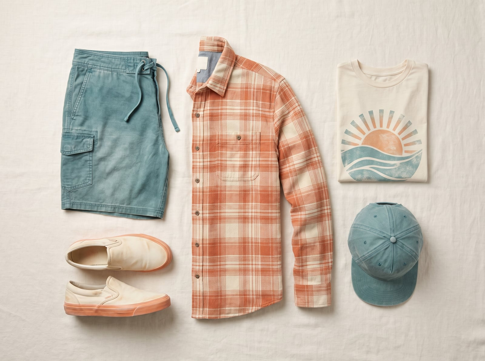
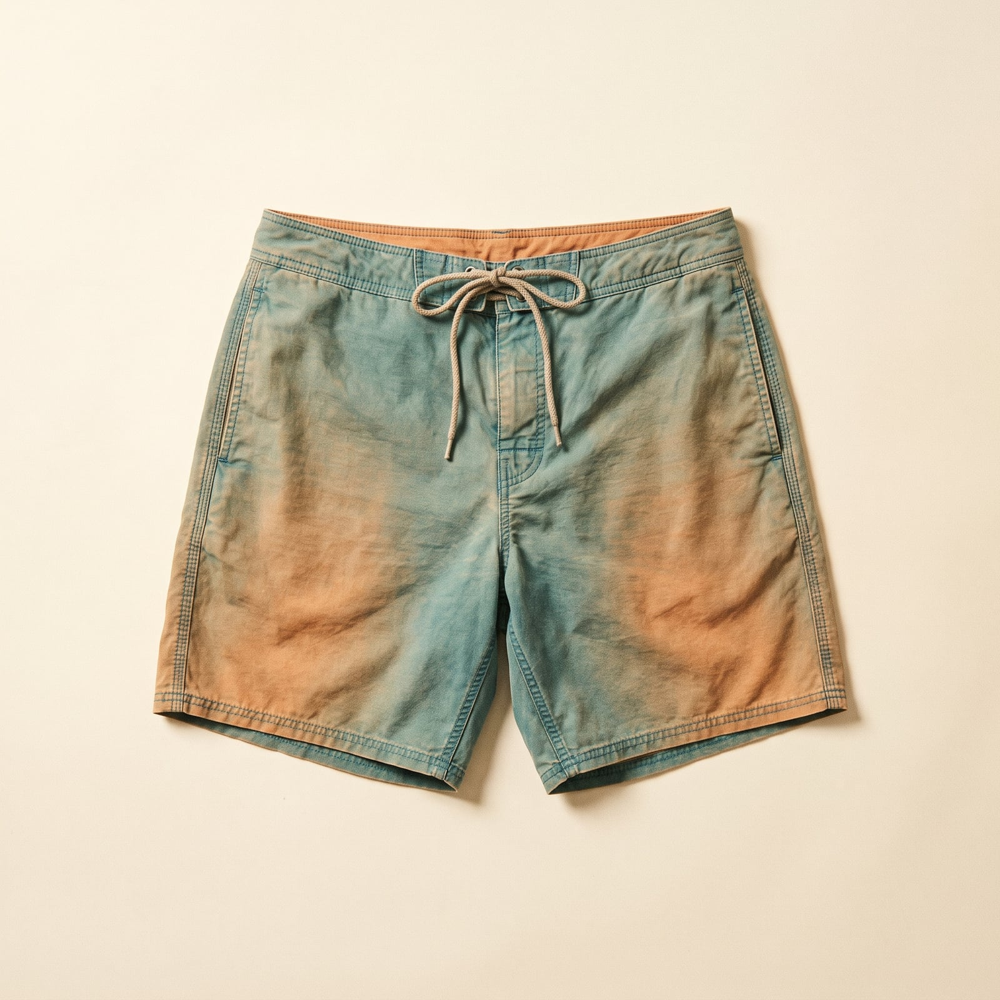
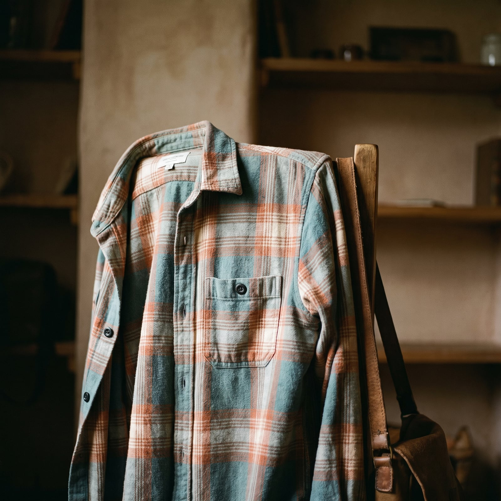
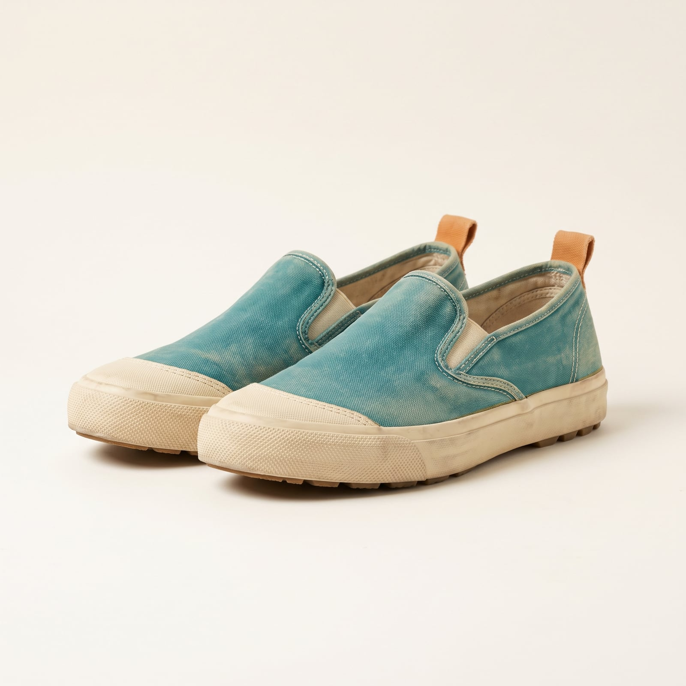
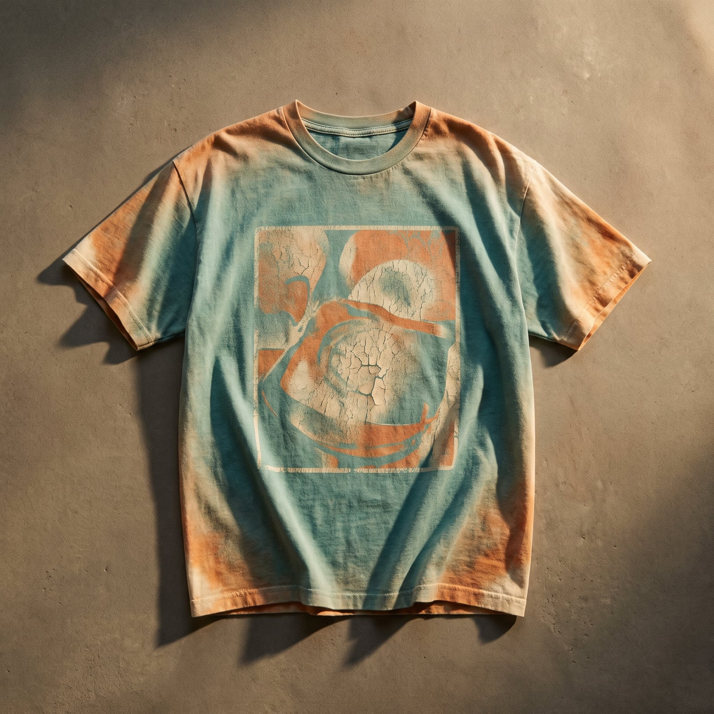
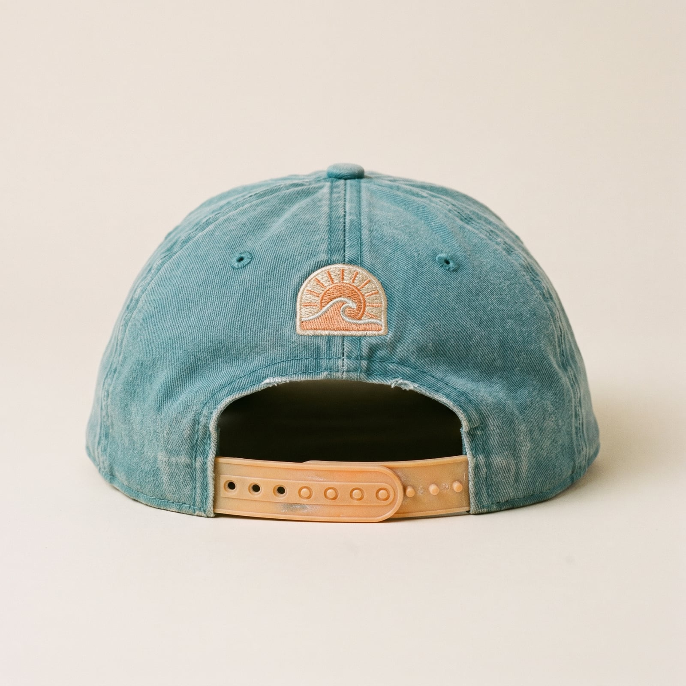

The Waverider
Surf culture built its own wardrobe out of necessity long before it became a look — board shorts that wouldn't chafe, flannel to layer over a wetsuit as the sun went down, canvas shoes with soles built to grip wet decks. Skateboarding, growing up alongside it on the same California sidewalks through the 1970s and '80s, borrowed the same palette and roughed it up further: baggier fits for movement, thrifted flannel because new clothes were an odd thing to grind concrete in. Brands like Vans, born in Anaheim in 1966, and later Stüssy, sold the whole ethos back to a much larger audience than the beach ever had.
The trademark is a specific kind of un-precious ease — sun-bleached color, a fit loose enough to forget about, nothing that would be ruined by salt water or a bad landing. Layering happens by accident, a flannel thrown on when it gets cold rather than chosen to complement anything, and looks better for it.
It suits people who genuinely don't think about their clothes very hard and have made a whole aesthetic out of that fact — who'd rather be in the water or on a board than in front of a mirror. There's an enviable lack of anxiety in it: the clothes are just what's around, and what's around is usually enough.
- Board shorts and canvas slip-ons, built to dry fast and grip decks
- Flannel layered over a tee, thrown on rather than styled on
- Sun-bleached, faded color — nothing that looks freshly bought
- Graphic tees from surf and skate labels, worn to softness
- A haircut that has clearly never met a blow dryer


The Board Short
Board shorts evolved from surfers sewing their own trunks tough enough to survive paddling and wax, with a longer inseam and a tie-waist that wouldn't come loose or ride up in the water.
Genuine quick-dry construction at a mass-market price.
Shop this →Better fabric weight and a more considered, less logo-heavy print.
Shop this →Original heavyweight nylon construction, some styles unchanged since the 1960s and made in the USA.
Shop this →
The Flannel Overshirt
Layered over a wetsuit as the sun went down or thrown on straight from a thrift store, flannel entered surf and skate wardrobes for the same reason it powered grunge a few years later: cheap, warm, and nobody cared if it got trashed.
Genuine brushed cotton at the lowest reasonable price.
Shop this →The actual heritage flannel most surf brands reference, still American-woven.
Shop this →Better wool-cotton blends or genuine vintage pieces with real patina.
Shop this →
The Canvas Slip-On
Vans built its first shoe in an Anaheim storefront in 1966 specifically for skateboarding, with a thick vulcanized rubber sole designed to grip a board's grip tape better than any dress or running shoe of the era.
Premium materials on the same core silhouette.
Shop this →Hand-finished uppers and rare materials on a familiar silhouette.
Shop this →
The Graphic Tee
Surf and skate brands built their entire early marketing around T-shirt graphics rather than advertising, since a logo on a shirt riding a wave or grinding a rail was cheaper and more credible than any print campaign.
Heavier cotton and more considered, less mass-produced graphics.
Shop this →Original prints from defunct or early-era surf labels, bought through vintage dealers.
Shop this →
The Sun-Bleached Cap
A trucker or five-panel cap left in salt water and sun until the color fades unevenly became an unofficial badge of actual beach time — a cap that looks new suggests you haven't been in the water enough to ruin one yet.
Genuine cotton construction that will fade naturally with wear.
Shop this →Better cotton weight and a more considered, less logo-heavy design.
Shop this →Already-faded original pieces bought through vintage or surf-specific resellers.
Shop this →Buy board shorts and slip-ons that are actually built to get wet and dry fast — the practical requirement is real, not a style affectation, and gear that can't handle it will look wrong within a week of actual use. Let color fade naturally through sun and salt rather than buying pre-faded versions; the bleaching is a timestamp, and a fake one is easy to spot.
Let the flannel and the graphic tee actually soften with wear — this wardrobe is judged by how broken-in it looks, and a stiff, retail-new version of any piece in it stands out immediately next to the rest of the outfit.
Don't buy this wardrobe pre-distressed from a mall brand — a manufactured sun-fade or a fake salt stain is easy to spot next to the real thing, and this is a style with almost nowhere to hide a shortcut. The whole look is basically a record of actual time spent outside; there's no substitute for that.
This is a beach-and-boardwalk wardrobe, and it reads as underdressed almost anywhere else — worn to an office or anything requiring real formality, the board shorts and slip-ons don't scan as relaxed so much as unprepared. Keep it where the ocean is at least visible.
This is the wardrobe's natural state -- boardshorts, bare feet, and nothing else required.
The wetsuit stays on longer than usual, and on land: the flannel gets fully buttoned for once, over a hoodie, with actual closed-toe shoes rather than sandals.
Nobody here owns a real raincoat; a hoodie gets pulled up and that's considered sufficient, since the ocean was going to get everything wet anyway.
Genuinely rare, and handled with visible confusion -- the warmest thing in the closet (probably still just a hoodie) plus borrowed gloves.
A clean, unwrinkled version of the usual flannel, actual shoes instead of sandals, and hair that's seen a comb -- this wardrobe's idea of black tie.

Bali, the North Shore of Oahu, and any coastline with a reliable swell — the itinerary is basically a surf forecast with flights attached, planned around conditions rather than dates.
A trip gets extended on the spot if the waves are good, and cut short without much regret if they aren't. Accommodation is chosen for proximity to the break, not amenities.
Kem Nunn's surf noir and biographies of big-wave surfers, read in the kind of long, unhurried stretches that only a flat, waveless afternoon allows.
Whatever paperback got left at the last Airbnb gets picked up without much discrimination and usually finished before the next one, out of a kind of traveler's obligation.
Find it on Amazon →Surf-rock revivalists and reggae, plus whatever's playing at the beach bar — never chosen carefully, always somehow fine.
A playlist that hasn't been updated in years because it hasn't needed to be; the same twenty songs work for every sunset in rotation.
Listen on YouTube →A garage full of boards in various states of repair, at least one of them a genuine project that's been 'almost fixed' for a season.
Sand permanently in the entryway, treated as an inevitability rather than a problem, and furniture nobody worries too much about ruining.
See more on Pinterest →Surfing before anything else gets scheduled — the rest of the day is built around conditions, not the other way around.
Skateboarding as a rainy-day backup when the swell's flat, and a nap treated as a legitimate, unapologetic afternoon activity.
Learn more →